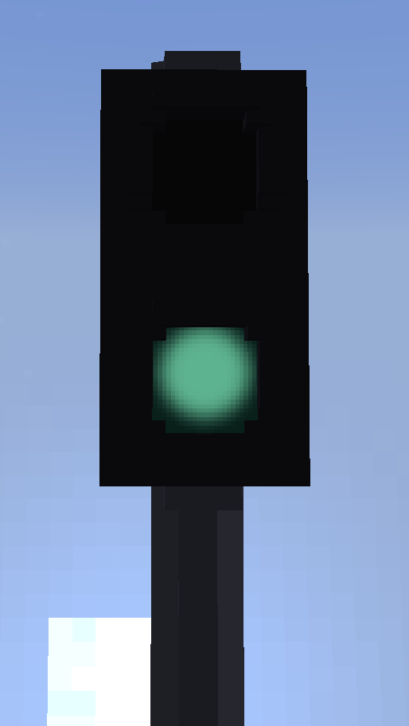
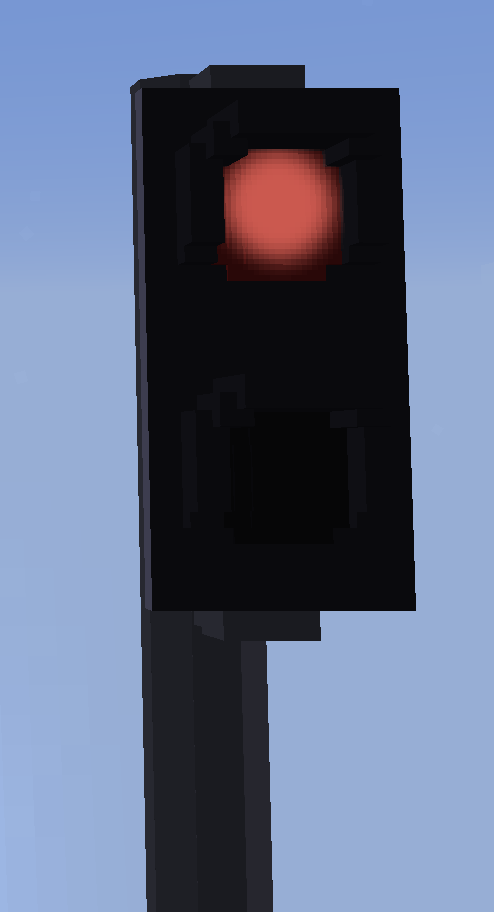
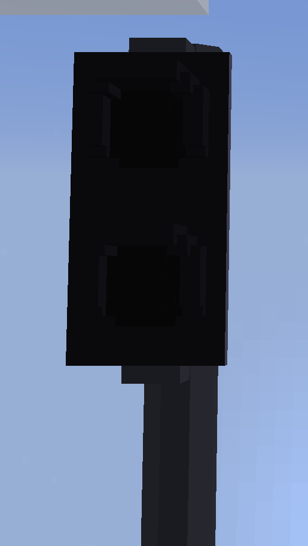
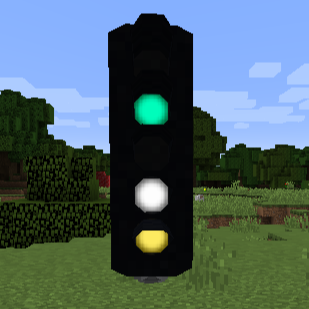

Signals (BLOCKSIGNAL)¶
Description¶
This is a simple signal, it has a more strict and simpler structure.
It is more performance-friendly and requires fewer lines.
It has only one controllable group and the model can only be changed via its texture.
If this suits your needs, this is the preferable option.
This is the successor of the previous signals from ContentPacksV1
This will lead you to the old contentpack v1 system:
Contentpack V1 documentation
Structure¶
-
The identifier of the block and item.
Required field!
Needs to be unique!
If more than one block within the same contentpack has the same id, only one will be loaded.Should not be changed!
Changing the id will break existing blocks. -
The name of the block and item.
Required field!
Can be changed later on.
Does not have to be unique, although that helps. -
The model of your block.
Required field!
Path does not require
/assets/landofsignals/.Currently only *.obj is supported!
The name and content of the file can be changed later on.
This may cause the UniversalModCore cache to break.
You can try to delete the/cache/landofsignals/folder in your minecraft instance. -
The steps in which the block can be rotated.
Optional field.
Default value: 10
Allowed values: 10 - 90Can be changed later on.
-
The translation of the block.
Optional field.
Default value: 0,0,0
Values higher than 2 might cause issues with the block rendering.
Is affected by
scalingastranslationhappens afterward.Can be changed later on.
May screw up the positioning of existing blocks.
-
The translation of the item.
Optional field.
Default value: 0,0,0
Is affected by
itemScalingasitemTranslationhappens afterward.Can be changed later on.
-
The scaling of the block
Optional field.
Default value: 1,1,1
Can be changed later on.
Affects
translationasscalinghappens beforehand.May screw up the positioning of existing blocks.
-
The scaling of the item
Optional field.
Default value: 1,1,1
Can be changed later on.
Affects
itemTranslationasitemScalinghappens beforehand. -
The different states your signal has.
Important information!
States
Remove below.""ornullis a valid state.
Uses texture(s) that are within the same folder as the model (*.obj).Can be changed later on.
Adding new states is no issue.
Changing the order of states may screw up existing signal logic circuits.
Removing states may break existing blocks.
-
The first state.
The state corresponds to a folder with the same name containing the textures for it.
Important information!
States -
The last state.
The state corresponds to a folder with the same name containing the textures for it.
Important information!
States -
The default state for items.
Optional field.
Default value: first value of
statesThe state does not have to be part of the
stateslist.
You could add a custom state for the item.
Important information!
StatesCan be changed later on.
-
Is there a base texture for this block?
Optional experimental field.
Not recommended.Default value: false
Allowed values: true, falseCan be changed later on.
-
Default textures that are always rendered independent of the current state.
Optional experimental field.
Not recommended.Can be changed later on.
Changing the name may cause the UniversalModCore cache to break.
You can try to delete the/cache/landofsignals/folder in your minecraft instance.
States¶
This is about the different states your signal can posses and how the order affects other aspects of the game.
Implementation¶
Your signal can have one or more states. Previous contentpacks (V1) had some static blocks added as signals with a single state. If you'd like to add something static as well, take a look at the Signs and Assets.
Let's say your signal has 3 states: off, green, red. (1)
-
Example signal: off, green, red

-
This texture would look like this: green

-
This texture would look like this: red

-
This texture would look like this: off

This texture will be listed ingame as "Default."
This texture must always be available!
This is not necessarily the default texture! See below.
-
This texture would look like this: green
-
This texture would look like this: red
-
This texture would look like this: off
This texture will be listed ingame as "Default".
This texture must always be available!
This is not necessarily the default texture! See below.
Sorting, priorities and overwriting of states¶
The default texture is always added. Either by the creator or by the mod.
The mod will add the default texture, if not already added, to the first place of the list.
It can be added as "" (null works as well, will be transformed internally to "")
The order of the states will affect different things.
The first state listed in your states will be used as "itemState" if not set otherwise in the JSON.
Also, the first state will always be the state of placed signals, if they are not overwritten by a signalbox.
When using multiple signalboxes, the signal will store every set state.
The displayed state will always be the latest in the states list.
A few examples:
States: Off (Default), Green, Red
When placed: Off
Off & Green active -> Green
Green & Red active -> Red
Off & Green & Red active -> Red
States: Green, Red, Off (Default)
When placed: Green
Off & Green active -> Off
Green & Red active -> Red
Off & Green & Red active -> Off
Priority
Lowest - Off
Second - Green
Highest - Red
The order of states can be changed individually with a click on the signal block.
Flares¶
-
Flares (optional, nice to have)


If your model contains lamps or other parts that are supposed to glow, this is the right place.
Flares are oriented to your models and light up when the right state is set.
They can be added to signals, complex signals, deco/assets, signs and levers.